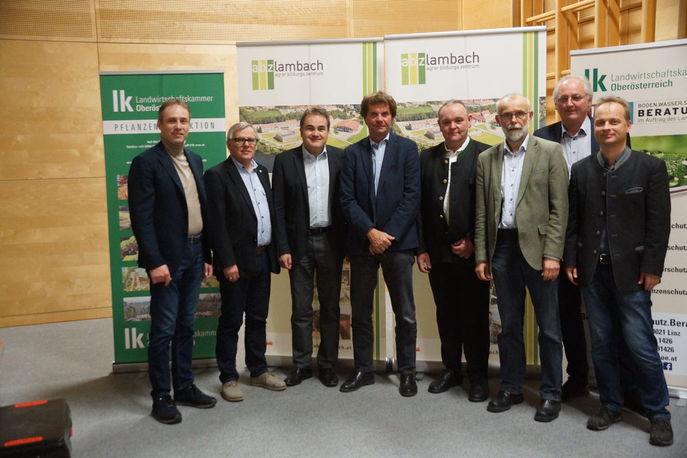

Ackerbautagung 2019
Der Turnsaal im abz Lambach war am 2. Dezember 2019 voll besetzt und es wurden
von Franz Kastenhuber, DI Hubert Köppl, DI Helmut Feitzlmayr und DI Thomas Wallner Versuchsergebnisse aus Oberösterreich und speziell aus Bad Wimsbach-Neydharting präsentiert.
Eine gelungene Veranstaltung, die bereits zu einem fixen Termin für die oberösterreichischen Bauern geworden ist.